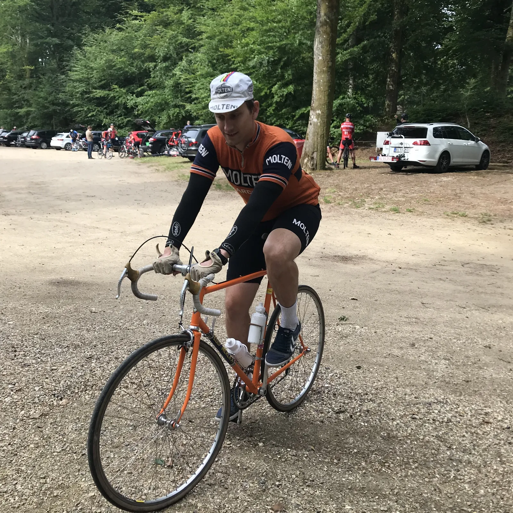
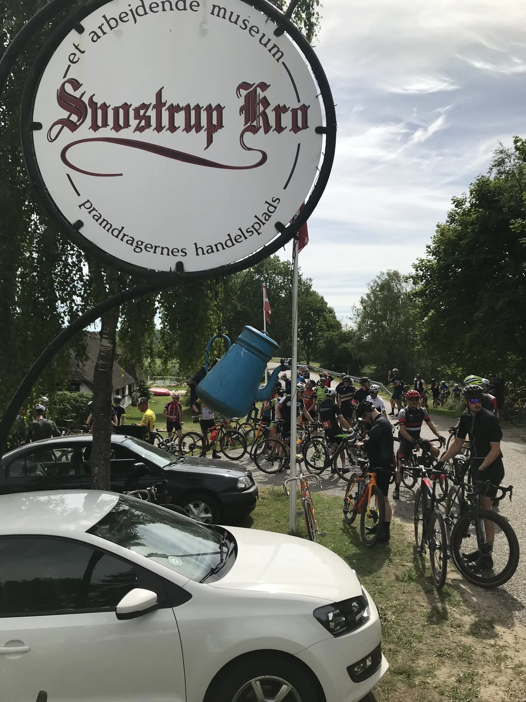
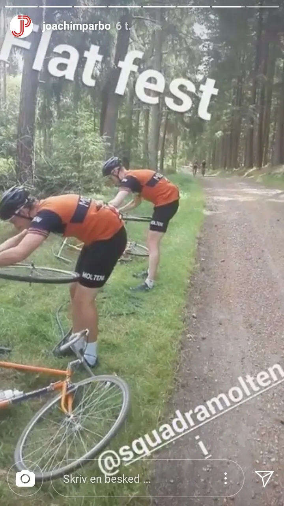
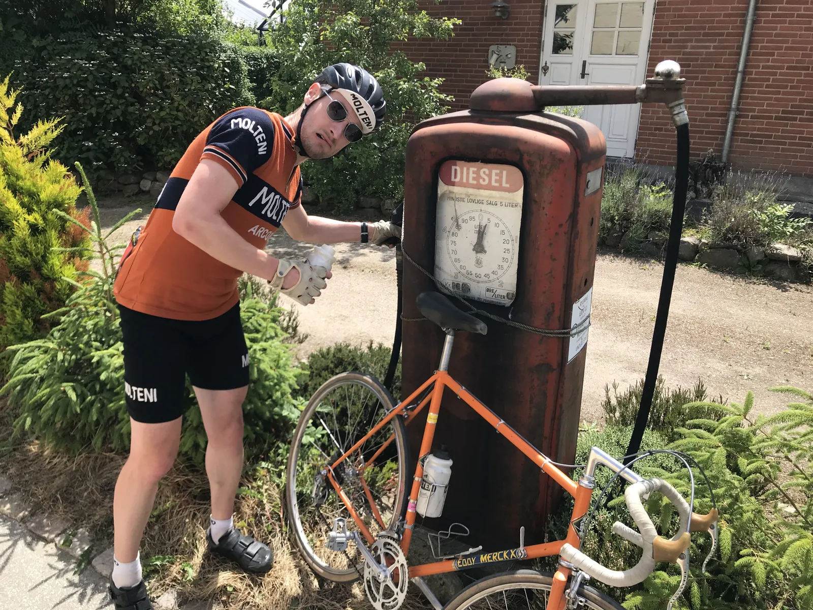
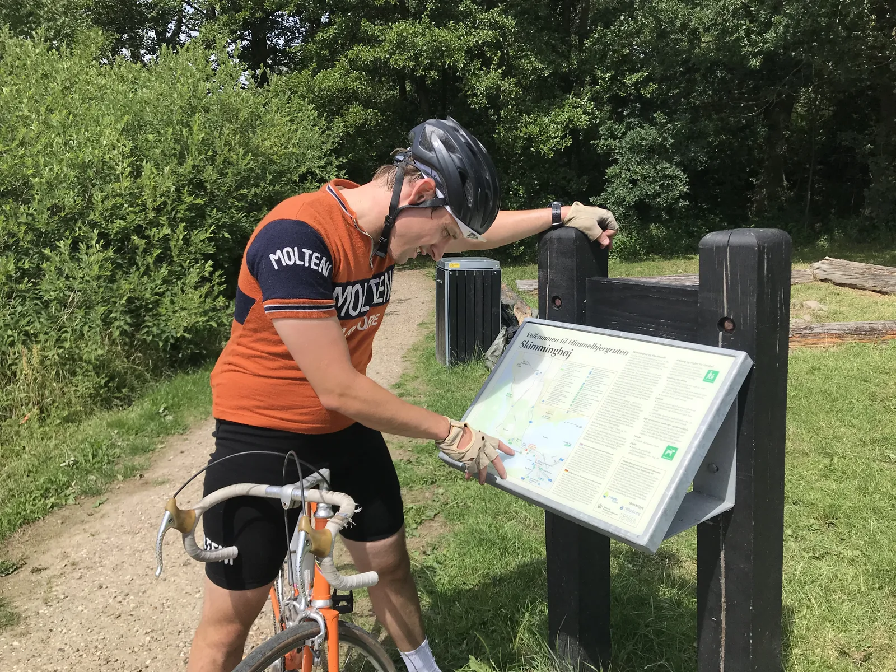
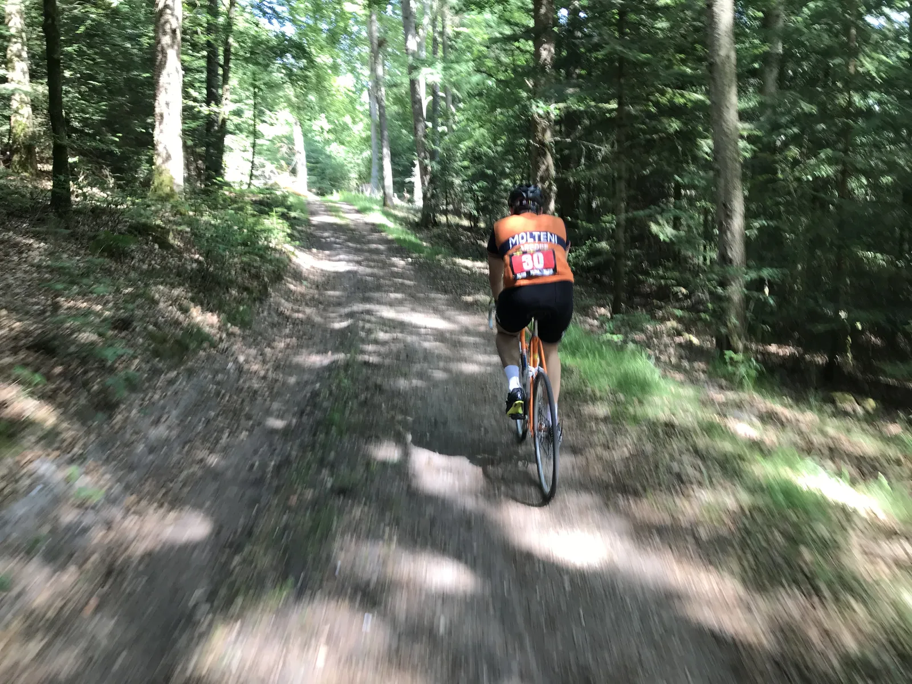
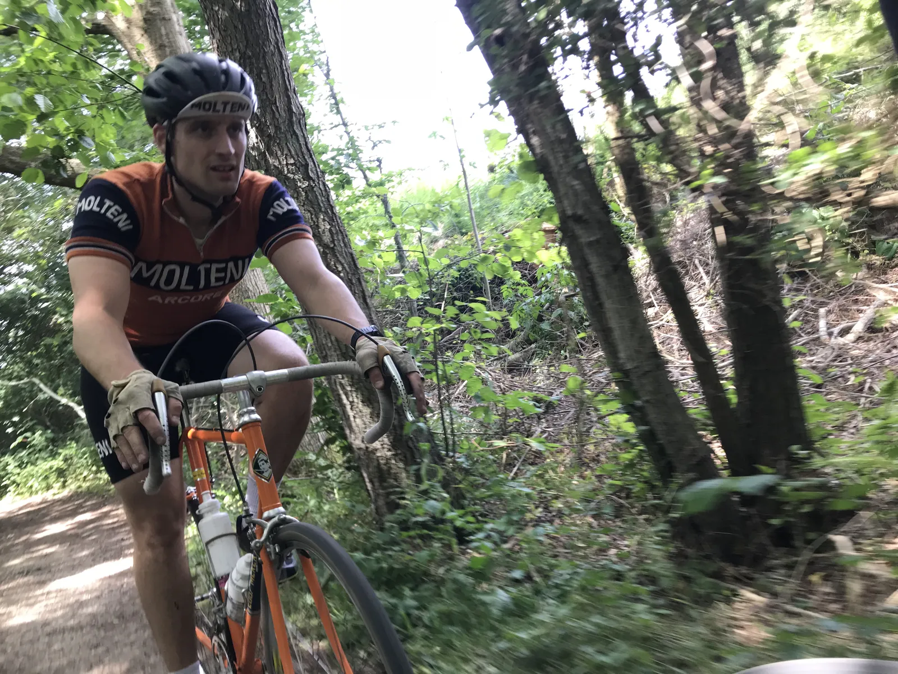

De Ronde van Skovtur: Et skizofrent løb (på den gode måde) rundt om Silkeborg

Squadra Molteni stillede i dag til start ved De Ronde Van Silkeborg. Et løb på 85 km. der var defineret som et grusvejs motionscykelløb, men det skulle vise sig at være meget mere end det.
Kl. 9 søndag morgen var løbets ca. 150 deltagere i gang med indskrivningen, hvor der var småkoldt, og rundstykker til rytterne. Heriblandt Kasper Sørensen, Jens Langergaard og Steffan Sørensen på deres stålracere med 28 mm. dæk.

Fat bikes eller landevejsracer?
Der var mountainbikes, gravel bikes, cross cykler, fat bikes, landevejscykler og turcykler. Rytterne var tydeligvis splittet i forhold til udstyr, og med god grund skulle det vise sig. De Ronde van Silkeborg er umulig at sætte i bås!
Et kort taktikmøde mellem Jens og Kasper lød på en sluttid omkring de 3,5 time.
Styrtede ind i et juletræ
Efter Masterstarten gik den samlede start. Efter 1 km. med asfalt, drejede feltet ind til højre i skoven. Her skiftede underlaget fra fast til en blanding af sand, løse sten, grus og single track med stejle forhøjninger og rødder.

Jens tabte med samme et og andet, Steffan blev juleforvirret og markerede 6 månedersdagen for juleaften ved at styrte ind i et juletræ. Kort efter væltede han igen, og var ved at tage Kasper med i faldet. Der var kørt 5 km!
Specifikt træningsprogram
Steffan var ellers helt klar til løbet, som han havde forberedt sig specifikt til med hjælpe fra holdets læge Finn Birk.
– Jeg har trænet meget fokuseret i år. Jeg har ikke trænet i vinter, så Finn gav mig i marts et træningsprogram med 10 træningspas som bare skulle gennemføres for at jeg var klar til Ronde Van Silkeborg. Perfekt for en travl familiefar som mig, udtaler Steffan Sørensen.
Synkron punktering x 3
Efter et par ordentlige dingerføringer gik til ind til Nordskoven, hvor skoveveje, løse sten, rødder og vanvittige nedkørsler fortsatte.
Jens kørte med en veloplagt Joachim Parbo og punkterede kort efter en stejl nedkørsel. 800 meter senere blev Kaspers dæk flænset op. Parbo tog teten og gav en lektion i førstehjælp. Et par striber gaffatape blev fundet frem og sat på indersiden af dækket. En ny slange i, og i samme sekund opdager Steffan, at han er flad på baghjulet.

Kasper måtte kort efter fikse endnu et dækproblem, og Jens og Parbo gled afsted i perfekt parløb – bare i den forkerte retning.
Nu begyndte dunkene efterhånden at være tømte, og Kasper var også ved at køre lidt død på diesel.

Depot og mere gaffa
Ca. 25 km. senere, kort før depotet, kom Jens og Parbo bagfra, og meldte at de var kørt helt forkert. Perfekt timing da Kasper nu ved depotet havde brug for lidt mere af Parbos Gaffa.
– Joachim var bare hele tiden på det rigtige sted på det rigtige tidspunkt. Uden ham måtte jeg nok have kørt de sidste 55 km. på flad ring, fortæller Kasper.

Sandwich, kage og Jolly cola blev fyldt på, og de sidste 30 km. skulle nu overstås. Stor ros til personalet på depotet, som var klar med opmuntrende ord, og endda et plaster, til Kaspers finger, som var tæt på at forbløde.
Punktering og igen på afveje
Jens startede med en punktering, og Parbo sprang til. Derefter fortsatte de i perfekt parløb – bare i den forkerte retning (igen). Ruten fortsatte på single track rundt om Julsø, og Kasper og Steffan begyndte at tælle kilometerne ned.

– Vi regnede med 3,5 time for at gennemføre. Efter 3,5 time var vi ikke engang ved første depot. Det gik så langsomt inde i skovene. Jens var nødt til at ringe til konen, og sige at det ikke var nødstilfælde at han blev 2 timer forsinket, fortæller Steffan.
Himmelbjerget skulle forceres via en trekking vej, der mest af alt mindede om en for længst glemt pilgrimsrute i Sydfrankrig. Vanvittige stigningsprocenter og løst grus, så ikke engang MTB’er kunne cykle op.
Stillestående styrt og 15 km. i stilhed
De sidste 15 km. blev der ikke sagt ret meget. Koncentrationen var 100% rettet mod at undgå rødder og væltede træer, samt om at finde vej.

Kasper er så koncentreret, at han ved en vejpassage ikke ser en kæmpe rod der blokerer hans forhjul.
Da han sætter i gang med ca. 1.756 watt fossende ud gennem pedalerne, så rejser baghjulet sig blot en meter fra jorden, og Kasper ryger forover styret og styrter dermed fra stillestående position. Steffan klapper!
Alt i mens er Jens og Parbo på vej i den forkerte retning, men Jens når lige at få en punktering sat ind 2 km. før målstregen.
5 timer i sadlen afsluttes med burger og fadøl
Efter små 5 timer passerer Kasper og Steffan målstregen, og kort efter kommer Jens og Parbo.
Efter løbet var Jens meget klar i spyttet uden at være blevet meget klogere.
– Jeg ved ikke hvad det her var. Gravelløb i Jylland er åbenbart en blanding af MTB og Downhill tilsat en smule gravel, skovbund og rødder. Kun meget få kilometer foregik på Molteni’s foretrukne underlag som er sportsgrus, udtaler Jens Langergaard efter løbet.
Efter løbet var der lækre frisklavede burger og fadøl fra vestfyen.
Det var squ da Ole Ritter!
Da jens går ned til bilen med sin smukke stålcykel, kommer to MTB’ere forbi, som var ude og træne. Den ene siger til den anden: ”Det var squ da ole Ritter”.
Fra Squadra Molteni skal lyde et stort tak for support til Joachim Parbo, der konstant var på pletten med assistance til et par yderst uerfarne graywell riders. Vi ses til Grote Prijs d. 27. oktober!
De Ronde Van Silkeborg kan klares på landevejs cykel med 28 mm. dæk, men det kan absolut ikke anbefales. En cross cykel med 32-33 mm. dæk med godt greb bør være minimum på den lange rute.